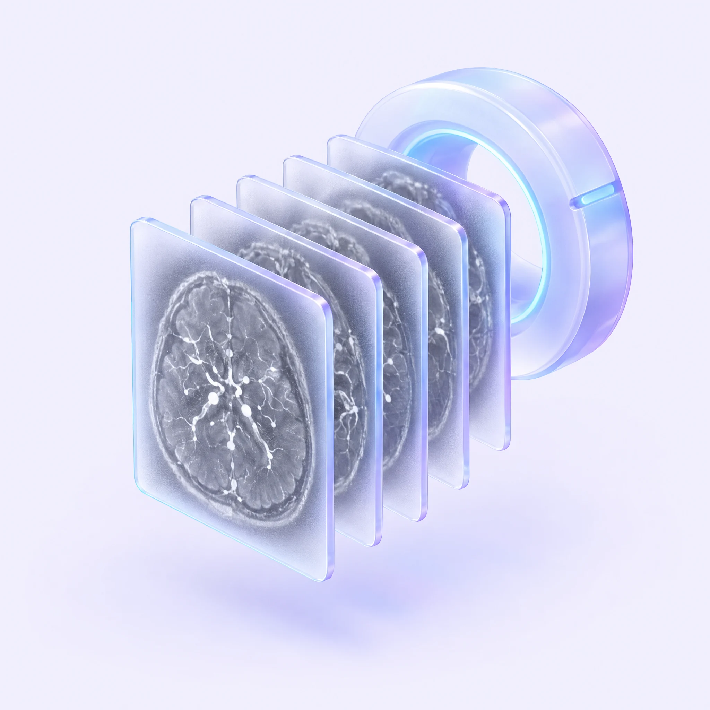
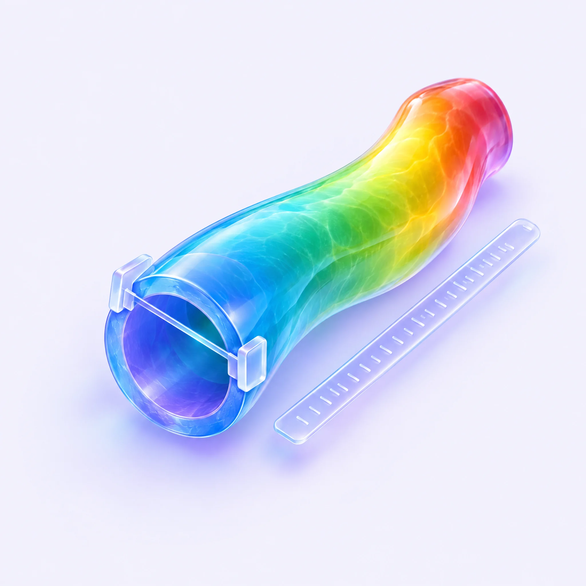
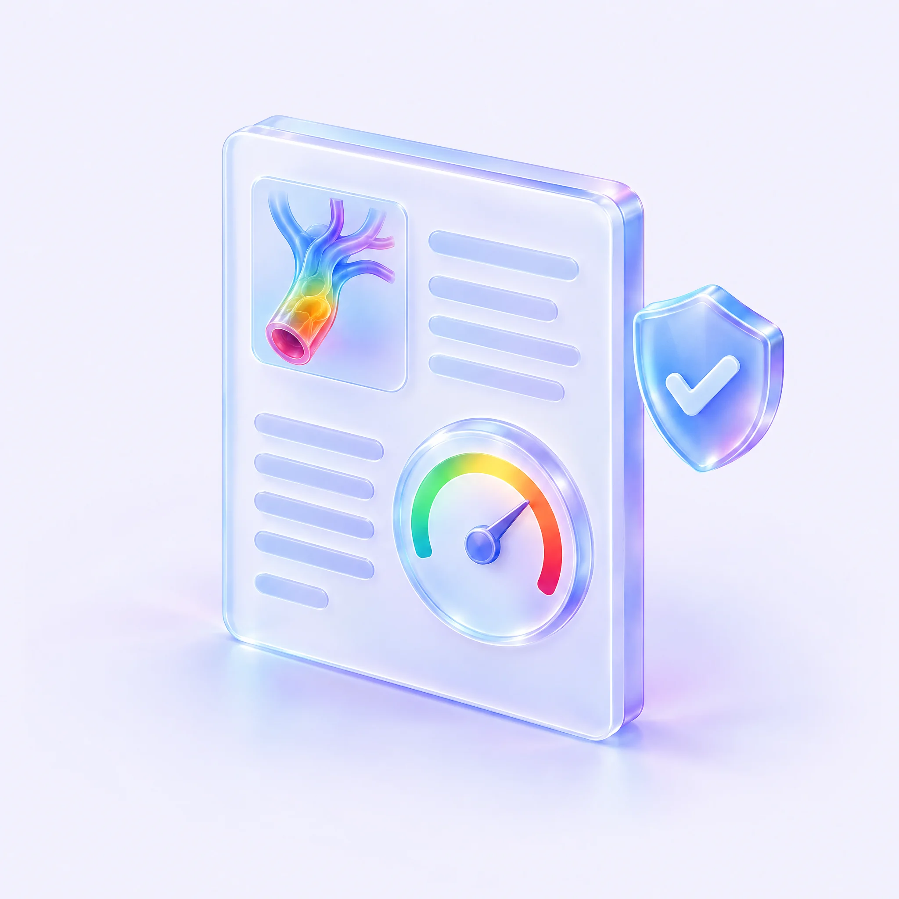
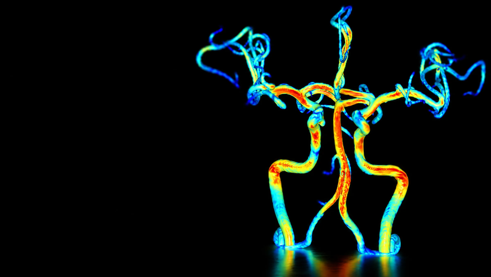

01Certification
FDA 510(k) Cleared ·
식약처 인증
미국과 한국의 규제 기준을 통과한 의료기기 소프트웨어입니다.
GMP, ISO 13485, ISO 27001 품질·보안 체계로 관리합니다.
이미 찍은 MRA로,
뇌혈관을 색과 숫자로 봅니다.
01Certification
미국과 한국의 규제 기준을 통과한 의료기기 소프트웨어입니다.
GMP, ISO 13485, ISO 27001 품질·보안 체계로 관리합니다.

02Evidence
2010년에 시작된 연구가 SCI(E) 논문으로 이어졌습니다.
모야모야병, 뇌경색, 뇌동맥류, 소혈관질환에서 SIG를 연구합니다.

03For Patients
"이상 없음" 한마디 대신, 내 뇌혈관을 색으로 직접 봅니다.
한 장의 보고서로 이해하고, 관리의 동기를 얻습니다.
Before & After
NeuFlow는 TOF-MRA 한 번으로 뇌혈관을 3D 컬러와 SIG 수치로 분석하는 소프트웨어입니다. 추가 촬영도, 조영제도 필요 없습니다.
기존 MRA
NeuFlow
 NeuFlow
NeuFlow
 기존 MRA
기존 MRA
좌우로 드래그해 비교해 보세요. 같은 환자의 원본 TOF-MRA와 NeuFlow 분석 결과입니다.
One Stop Process
이미 촬영한 MRA 한 번이면 충분합니다.
분석, 측정, 환자 설명이 하나의 흐름으로 이어집니다.

01
03
04기존에 촬영한 TOF-MRA 영상을 그대로 사용합니다. PACS에서 불러오면 준비가 끝납니다.
자동 분할로 3차원 혈관 구조를 재구성하고, 혈류역학 데이터를 SIG 컬러맵으로 시각화합니다.
관심 혈관(ROI)의 지름, 길이, SIG 수치를 측정해 판독에 정량 근거를 더합니다.
환자가 이해하는 한 장의 뇌혈관 건강 보고서를 자동으로 생성합니다. 정기 추적 관리로 이어집니다.
Features

전체 혈관과 선택 혈관의 혈류역학 특성을 수치로 확인합니다.

기존 병원 시스템에 그대로 연결합니다. 새 장비도, 새 동선도 필요 없습니다.

2D 슬라이스 위에 3D 컬러 혈관을 겹쳐 정확한 위치를 확인합니다.

관심 혈관의 지름, 길이, SIG를 혈관별로 측정합니다.

환자가 이해하는 한 장의 리포트를 자동으로 만듭니다.
개인별 뇌혈관 관리 가이드로 정기 추적 관리를 돕습니다.
In Numbers
11,579+
분석한 환자 수
90+
설치 병원
98%
사용자 만족도
7
등록 특허
Clinical Partners
판독에 정량 근거를 더하고, 환자에게 직관적으로 설명하며, 정기 추적 관리로 이어집니다. 국내 주요 대학병원에서 Mount Sinai까지, 임상 현장이 넓어지고 있습니다.


Voices
MRA의 PET을 보는 것 같습니다. 컬러로 보는 즉시 확인이 되고 확신이 섭니다.
신경과 전문병원 병원장
이제 뇌혈관을 컬러와 숫자로 볼 수 있습니다.
신경과 전문의
뉴플로우로 판독한다는 소문을 듣고 환자분들이 먼저 찾아오십니다.
신경과 개원의